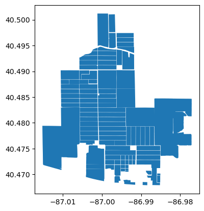

Introduction to Ag Informatics
Module 6, Lecture 1Tam Bureetes, tbureete@purdue.edu
Fall 2023
Outline for Today
- Spatial data
- Introduction to geometry in Python
- From geometry to spatial data
- Putting spatial data to map in Django
Install Python packages
conda activate asm591
conda install pyarrow
conda install -c conda-forge geopandas
You can find commands in module 6 -> lab 6
Spatial Data & Geographic Information System
Tools
- ArcGIS, QGIS, Google Earth
- Google Map, MapBox
- Python

Geometry fundamental element
Geometry fundamental element
Point
Geometry fundamental element
Line
Geometry fundamental element
Polygon
Geometry in action

Reference: Purdue Introduction to Agricultural Informatics Module
2

Reference: Purdue Introduction to Agricultural Informatics Module
6

Reference: Purdue Introduction to Agricultural Informatics Module
1
Geometric Object In Python
Shapely
Manipulation and analysis of geometric objects in the Cartesian plane
docs
Reference: Purdue Introduction to Agricultural Informatics Module
6
import shapely.geometry as geo
point = geo.Point(0, 0)
line = geo.LineString([[0, 0], [1, 0]])
line.length
polygon = geo.Polygon(((0, 0), (0, 1), (1, 1), (1, 0)))
polygon.area
point_a = geo.Point(0, 0)
point_b = geo.Point(10, 5)
point_a.distance(point_b)
line_a = geo.LineString([[0, 0], [10, 0]])
line_b = geo.LineString([[5, -5], [5, 5]])
line_a.intersects(line_b)
line_a.intersection(line_b)
polygon.contains(point_a)
polygon.contains(line_b)From Geometry To GeoSpatial
| GeoPy | Link with map services |
| PySAL, GeoPlot | Visualize Geospatial data |
| ArcPy | Working with ArcGIS |
| GDAL | Driver for GIS software |
| GeoPandas | Pandas with GeoSpatial functionalities |
GeoPandas
Pandas + Shapely
import geopandas as gpd
world_df = gpd.read_file(
gpd.datasets.get_path('naturalearth_lowres')
)
| pop_est | continent | name | iso_a3 | gdp_md_est | geometry | |
|---|---|---|---|---|---|---|
| 0 | 889953.0 | Oceania | Fiji | FJI | 5496 | MULTIPOLYGON (((180.00000 -16.06713, 180.00000... |
| 1 | 58005463.0 | Africa | Tanzania | TZA | 63177 | POLYGON ((33.90371 -0.95000, 34.07262 -1.05982... |
| 2 | 603253.0 | Africa | W. Sahara | ESH | 907 | POLYGON ((-8.66559 27.65643, -8.66512 27.58948... |
| 3 | 37589262.0 | North America | Canada | CAN | 1736425 | MULTIPOLYGON (((-122.84000 49.00000, -122.9742... |
| 4 | 328239523.0 | North America | United States of America | USA | 21433226 | MULTIPOLYGON (((-122.84000 49.00000, -120.0000... |
world_df.plot()
import numpy as np
world_df['log_gdp'] = np.log(world_df['gdp_md_est'])
world_df.plot("log_gdp")

world_df = world_df.to_crs(
"+proj=eck4 +lon_0=0 +x_0=0 +y_0=0 +datum=WGS84 +units=m +no_defs"
)
world_df.area
Open Data Source
Common File types
- ShapeFile (.prj + .dbf + .shp + .shx)
- GeoJSON
- KML
- GeoDatabase
Questions?
License
- Attribution Recommendation: Introduction to Agricultural Informatics Course", Tam Bureetes, Purdue University. Available at https://github.com/ag-informatics/ag-informatics-course. Licensed by CC BY-NC-SA 4.0.

This course is licensed under a Creative Commons Attribution-NonCommercial-ShareAlike 4.0 International (CC BY-NC-SA 4.0) license. This is a human-readable summary of (and not a substitute for) the license. Official translations of this license are available in other languages.
You are free to:
- Share — copy and redistribute the material in any medium or format
- Adapt — remix, transform, and build upon the material
Under the following terms:
- Attribution — You must give appropriate credit, provide a link to the license, and indicate if changes were made. You may do so in any reasonable manner, but not in any way that suggests the licensor endorses you or your use.
- NonCommercial — You may not use the material for commercial purposes.
- ShareAlike — If you remix, transform, or build upon the material, you must distribute your contributions under the same license as the original.
- No additional restrictions — You may not apply legal terms or technological measures that legally restrict others from doing anything the license permits.